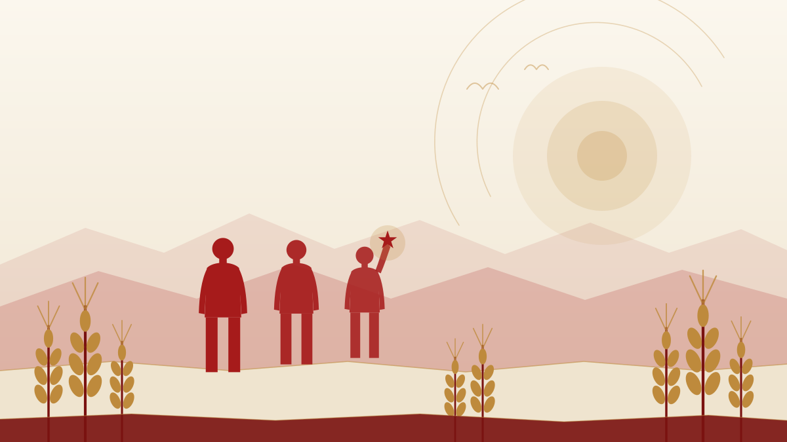
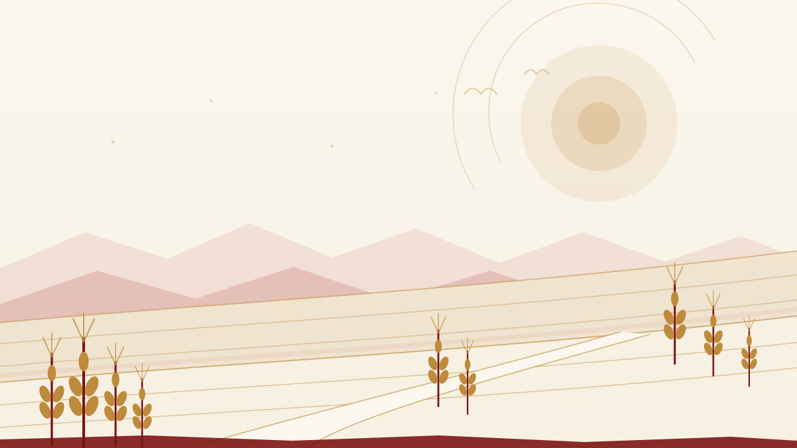

红色研学
把一次出行，变成一次学习
研学的价值不在去了多少地方，而在带回了什么。行前查清关键史实，现场抄下展板上的原文，回来把笔记整理成文章——三步都做到，一次出行才真正变成一次学习。

壹 · 青年答卷
传承不是一个抽象的态度，而是一连串具体的动作。下面四张答卷，是青年最容易上手、也最容易做出结果的四种做法。
红色研学
研学的价值不在去了多少地方，而在带回了什么。行前查清关键史实，现场抄下展板上的原文，回来把笔记整理成文章——三步都做到，一次出行才真正变成一次学习。
志愿讲解
在纪念馆、校史馆或社区讲上 8 分钟，比自己读 8 个小时记得更牢。讲解要有史实、有主线、有落点：先讲清发生了什么，再讲为什么重要，最后交给听的人一个问题。
数字传承
网页、短视频、信息图、插画、小程序——历史需要被重新讲述，才能被同龄人听见。做的过程也是学习的过程：为了把一句话说准，你会去查三份资料。作品本身就是一次深度学习。
强农兴农实践
甘肃农业大学的办学初心是“臻进人类健康、裨益国民生计”，今天则讲“以强农兴农为己任”。落到行动上，就是假期下乡做调研、把技术带到合作社、把调研报告写回课堂——用专业回答土地提出的问题。
贰 · 行动清单
下面六条清单，把“传承”拆成了可执行的步骤。每条都给出做法与常见坑，点开一条读一遍，本周就能开始第一件。
小提醒：纪念馆的讲解词是很好的二手材料，但引用前要对着展板或权威出版物核对原始出处。
底线：宁可少讲一个细节，不可说错一个日期。讲解员的一句口误，听的人可能会记很多年。
小提醒：不要承诺自己做不到的事。实践的价值不在于去了多远，而在于真的解决了什么。
叁 · 农大与陇原
甘肃农业大学 1946 年创建于兰州，前身是国立兽医学院。学校的历史不长，但它与这片土地的关系很深——校训、精神、初心，都指向同一件事。
校训是“敦品励学 笃志允能”，甘农精神是“自强不息、奋发有为”，办学初心是“臻进人类健康、裨益国民生计”。三句话放在一起看，说的正是同一件事：先把人做好，再把学问做扎实，然后把所学用到人身上。学校以草学为国家重点学科，今天把“以强农兴农为己任”写在办学的坐标里。
1949 年 10 月 1 日，学校三周年校庆与中华人民共和国开国大典同日举行，师生以“国校同庆”的方式迎接新中国——这是校史与国史最直接的一次重合。对今天的在校生来说，传承这份传统不需要宏大的场面：把技术带到田间，把调研做到村口，把青春放在需要的地方，就是最实在的接续。

专题 · 柒
从 1946 年的国立兽医学院到今天，学校的历史里写着一条朴素的道理：把学问做在土地上。下一页，看校史如何与国史重合。
肆 · 我的行动卡
把下面这张卡当成对自己的一个小约定：不必全选，选你真正会做的，勾上，然后去做。进度只保存在你自己的浏览器里。
勾选打算在这个学期完成的动作。状态只保存在本机浏览器中，不会上传到任何服务器；换设备或清除缓存后会还原。
已完成 0 / 8 项
提示：勾选后进度条会实时更新；若浏览器禁用了本地存储（例如某些隐私模式），页面仍可正常勾选，只是关闭后不再保留。
伍 · 结语
甘肃的红色历史，是从山沟、河谷、走廊里长出来的：南梁的窑洞、腊子口的石崖、虎豹口的黄河、高台的城墙。它们不宏大，却具体；不遥远，就在一张车票能到的地方。
传承也不必等到某个隆重的时刻。读完一段原文，去看一处旧址，把一件事做完——这些小事连起来，就是一代人的答卷。陇原的星火曾经是一盏灯、一张报纸、一次突围；今天，它可以是你在实验室、在田间、在讲台上的一次认真。
陇原星火 · 青春作答